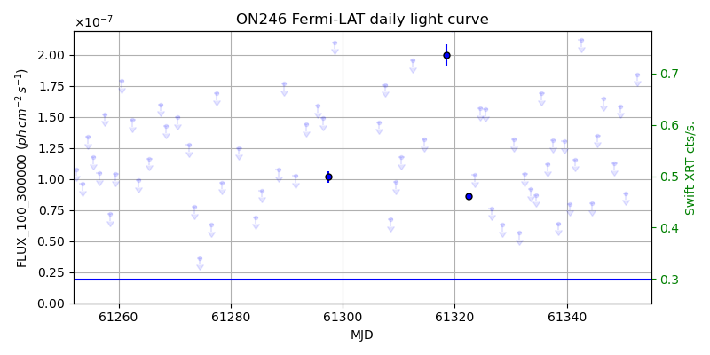
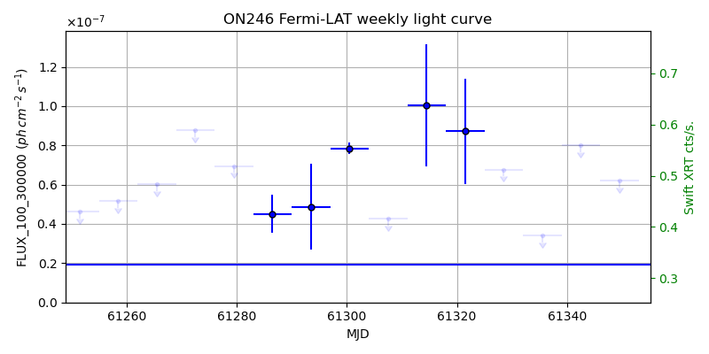
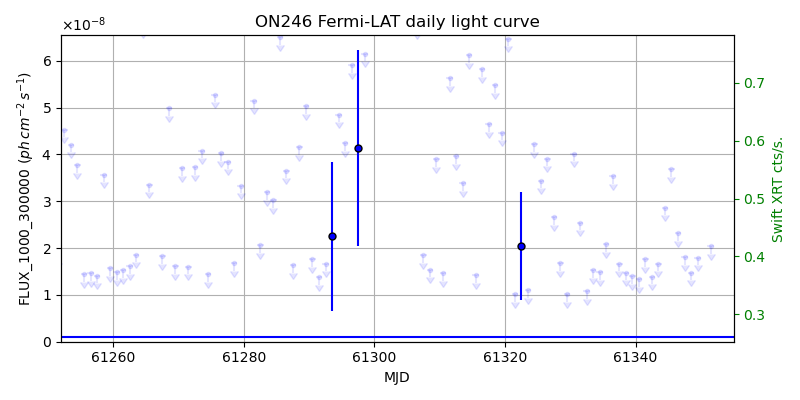
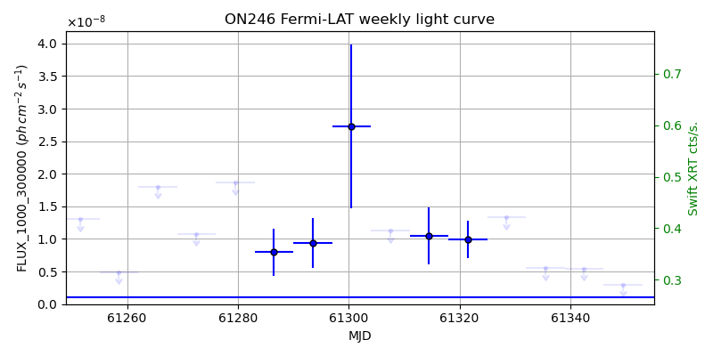

LAT Lightcurve site: https://fermi.gsfc.nasa.gov/ssc/data/access/lat/msl_lc/source/ON_246
Swift site: https://www.swift.psu.edu/monitoring/source.php?source=ON246
NED: Query
Time of last update of this page: UT: 2026-11-13 16:25 (MJD: 61357.684)
| Property | Value |
|---|---|
| R.A. | 12:30:14.16 |
| Dec. | 25:18:07.2 |
| z | 0.135 |
| 3FGL SpectrumType | PowerLaw |
| 3FGL PL Index | 2.24 |
| 3FGL Flux_100_300000 | 1.92e-08 1 / (s cm2) |
| 3FGL Flux_1000_300000 | 1.12e-09 1 / (s cm2) |
| 3FGL Flux >200 GeV | 1.60e-12 1 / (s cm2) |
| 3FGL Extrap. Crab >200 GeV | 0.01 |
| 3FGL Flux After EBL Absorption >200GeV | 9.50e-13 1 / (s cm2) |
| 3FGL EBL Crab Fraction >200GeV | 0.00 |

| MJD | dMJD | Flux | dFlux | Frac3FGL | FracCrab>200GeV | EBLFracCrab>200GeV |
|---|---|---|---|---|---|---|
| 61348.50 | 0.50 | 1.12e-07 | 0.00e+00 | 0.00 | 0.00 | 0.00 |
| 61349.50 | 0.50 | 1.59e-07 | 0.00e+00 | 0.00 | 0.00 | 0.00 |
| 61350.50 | 0.50 | 8.86e-08 | 0.00e+00 | 0.00 | 0.00 | 0.00 |
| 61351.50 | 0.50 | 3.52e-07 | 0.00e+00 | 0.00 | 0.00 | 0.00 |
| 61352.50 | 0.50 | 1.84e-07 | 0.00e+00 | 0.00 | 0.00 | 0.00 |

| MJD | dMJD | Flux | dFlux | Frac3FGL | FracCrab>200GeV | EBLFracCrab>200GeV |
|---|---|---|---|---|---|---|
| 61321.50 | 3.50 | 8.72e-08 | 2.69e-08 | 4.54 | 0.03 | 0.02 |
| 61328.50 | 3.50 | 6.77e-08 | 0.00e+00 | 0.00 | 0.00 | 0.00 |
| 61335.50 | 3.50 | 3.39e-08 | 0.00e+00 | 0.00 | 0.00 | 0.00 |
| 61342.50 | 3.50 | 8.00e-08 | 0.00e+00 | 0.00 | 0.00 | 0.00 |
| 61349.50 | 3.50 | 6.20e-08 | 0.00e+00 | 0.00 | 0.00 | 0.00 |

| MJD | dMJD | Flux | dFlux | Frac3FGL | FracCrab>200GeV | EBLFracCrab>200GeV |
|---|---|---|---|---|---|---|
| 61348.50 | 0.50 | 1.48e-08 | 0.00e+00 | 0.00 | 0.00 | 0.00 |
| 61349.50 | 0.50 | 1.79e-08 | 0.00e+00 | 0.00 | 0.00 | 0.00 |
| 61350.50 | 0.50 | -1.00e+00 | 0.00e+00 | 0.00 | 0.00 | 0.00 |
| 61351.50 | 0.50 | 2.04e-08 | 0.00e+00 | 0.00 | 0.00 | 0.00 |
| 61352.50 | 0.50 | 8.22e-08 | 0.00e+00 | 0.00 | 0.00 | 0.00 |

| MJD | dMJD | Flux | dFlux | Frac3FGL | FracCrab>200GeV | EBLFracCrab>200GeV |
|---|---|---|---|---|---|---|
| 61321.50 | 3.50 | 9.94e-09 | 2.84e-09 | 8.92 | 0.06 | 0.04 |
| 61328.50 | 3.50 | 1.33e-08 | 0.00e+00 | 0.00 | 0.00 | 0.00 |
| 61335.50 | 3.50 | 5.56e-09 | 0.00e+00 | 0.00 | 0.00 | 0.00 |
| 61342.50 | 3.50 | 5.48e-09 | 0.00e+00 | 0.00 | 0.00 | 0.00 |
| 61349.50 | 3.50 | 3.03e-09 | 0.00e+00 | 0.00 | 0.00 | 0.00 |
--------------------------------------------------------- Using user-supplied coords: 12:30:14.16 25:18:07.2 2000 --------------------------------------------------------- FLWO UT night of: 2026-11-14 Local Sid. @ Midnight: 03:09 Sunset (-15.0) (local, UT): 18:35 01:35 Sunrise (-15.0) (local, UT): 05:42 12:42 Moonrise (local, UT): Moonset (local, UT): 20:50 03:50 Moon phase: 0.22 --------------------------------------------------------- AzTime LSID UT Obj_el Obj_az Mn_el Mn_az Sep. --------------------------------------------------------- 18:35 21:44 01:35 -20.5 319.8 20.1 218.2 107.2 19:05 22:14 02:05 -24.4 325.9 16.0 223.7 107.4 19:35 22:44 02:35 -27.7 332.5 11.6 228.6 107.5 20:05 23:14 03:05 -30.3 339.7 6.9 233.2 107.7 20:35 23:44 03:35 -32.1 347.4 2.0 237.3 107.8 21:05 00:14 04:05 -33.0 355.4 -2.2 241.2 108.0 21:35 00:44 04:35 -33.1 3.5 -9.0 244.8 108.2 22:05 01:14 05:05 -32.3 11.5 -14.6 248.2 108.4 22:35 01:44 05:35 -30.5 19.3 -20.4 251.4 108.6 23:05 02:14 06:05 -28.1 26.5 -26.2 254.5 108.8 23:35 02:44 06:35 -24.9 33.2 -32.1 257.5 109.0 00:05 03:14 07:05 -21.1 39.4 -38.1 260.6 109.3 00:35 03:45 07:35 -16.8 45.0 -44.2 263.8 109.5 01:05 04:15 08:05 -12.1 50.0 -50.2 267.1 109.8 01:35 04:45 08:35 -6.9 54.6 -56.3 270.9 110.1 02:05 05:15 09:05 -0.8 58.9 -62.4 275.3 110.3 02:35 05:45 09:35 4.1 62.7 -68.4 281.1 110.6 03:05 06:15 10:05 9.8 66.4 -74.2 289.9 110.9 03:35 06:45 10:35 15.7 69.8 -79.6 306.2 111.2 04:05 07:15 11:05 21.8 73.0 -83.2 343.5 111.5 04:35 07:45 11:35 27.9 76.2 -82.1 35.1 111.8 05:05 08:15 12:05 34.2 79.3 -77.4 61.2 112.1 05:35 08:45 12:35 40.5 82.5 -71.8 73.4 112.4 05:42 08:52 12:42 41.9 83.2 -70.5 75.2 112.5 --------------------------------------------------------- Dark hours >55 deg.: 0.00